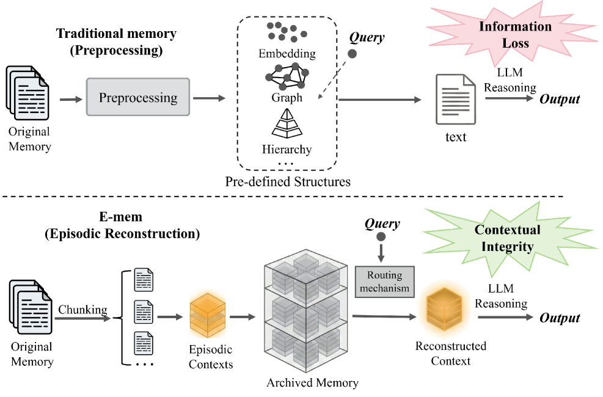

Why it matters왜 중요한가
The bottleneck of agent memory isn't storage size — it's the contextual integrity destroyed at write time.
에이전트 메모리의 병목은 저장 용량이 아니라, 기록 시점에 파괴되는 '맥락 보존성'이다.
When you flatten a long, sequential history into static embeddings, a knowledge graph, or a hierarchical archive, you gain cheap lookup but you sever the sequential dependencies that deep, multi-hop reasoning depends on. The authors call this destructive de-contextualization: once causal chains are compressed into fixed points, the agent can no longer reconstruct why or in what order things happened. E-mem reframes memory not as a compression problem but as episodic context reconstruction — preserve the raw context, then actively "re-experience" only the segments a query needs, reasoning inside their native order.
긴 순차 이력을 정적 임베딩, 지식 그래프, 계층적 아카이브로 납작하게 만들면 조회는 싸지지만, 깊은 멀티홉 추론이 의존하는 순차적 의존성을 끊어버린다. 저자들은 이를 파괴적 탈맥락화라 부른다 — 인과 사슬이 고정된 점으로 압축되는 순간, 에이전트는 일이 왜·어떤 순서로 일어났는지 더는 복원하지 못한다. E-mem은 메모리를 압축 문제가 아니라 에피소드 맥락 재구성 문제로 재정의한다 — 원본 맥락을 보존하고, 질의에 필요한 구간만 능동적으로 '다시 경험'하며 본래 순서 안에서 추론한다.

By the numbers핵심 숫자
(GPT-4o-mini master)LoCoMo F1
(GPT-4o-mini 마스터)
(strongest baseline)GAM 대비 F1
(최강 베이스라인)
vs full-context토큰 비용 절감
풀컨텍스트 대비
adversarial subsetLoCoMo 적대적
부분집합 최고 F1
(HotpotQA, 1600 docs)RAG 대비 F1
(HotpotQA, 1600문서)
global · vector · keyword라우팅 경로
전역 · 벡터 · 키워드
Results — episodic reconstruction tops the board결과 — 에피소드 재구성이 최상위
| Setting | GAM | E-mem | Δ |
|---|---|---|---|
| LoCoMo · GPT-4o-mini | 45.31 | 54.17 | +8.86 |
| LoCoMo · Qwen2.5-14B | 50.41 | 57.04 | +6.63 |
| Multi-hop · Qwen2.5-14B | — | +10.0 | +10.0 |
| Adversarial subset (peak) | — | 95.74 | — |
| HotpotQA-1600 (vs RAG) | — | +6.51 | +6.51 |
In one diagram한 장의 그림
Idea: memory as re-experience, not retrieval아이디어: 검색이 아니라 '재경험'으로서의 기억
Heterogeneous master–assistant이질적 마스터–보조 구조
A central master agent handles global planning but holds no raw memory. Each history segment is owned by a small assistant SLM (Qwen3-4B) that keeps a dual representation: an immutable full context E_i for local reasoning and a concise summary s_i for routing. This dodges the "Lost-in-the-Middle" failure of stuffing everything into one context.
중앙 마스터 에이전트는 전역 계획만 담당하고 원본 기억은 갖지 않는다. 각 이력 구간은 작은 보조 SLM(Qwen3-4B)이 소유하며, 국소 추론용 불변 전체 맥락 E_i와 라우팅용 요약 s_i를 함께 보관한다. 모든 것을 한 맥락에 욱여넣을 때 생기는 "Lost-in-the-Middle"을 회피한다.
Multi-pathway routing + local reasoning다중 경로 라우팅 + 국소 추론
A query activates segments through three parallel pathways — global narrative alignment, latent vector similarity, and symbolic keyword (BM25) match — with no runtime LLM call. Activated assistants then re-reason over intact context and emit timestamped evidence tuples ⟨c_i, τ_i⟩ the master fuses by chronology.
질의는 세 병렬 경로로 구간을 활성화한다 — 전역 서사 정합, 잠재 벡터 유사도, 기호적 키워드(BM25) 일치 — 런타임 LLM 호출 없이. 활성화된 보조들은 온전한 맥락에서 다시 추론해 타임스탬프 근거 튜플 ⟨c_i, τ_i⟩을 내보내고, 마스터가 이를 시간순으로 융합한다.
How it works어떻게 작동하나
- Build & store구축·저장Partition the unbounded stream with an overlapping sliding window (stride S < length L) into episodic contexts E_i; each is held by a dormant assistant agent with O(1) streaming updates and carried-over overlap for boundary continuity.무한 입력 스트림을 겹침이 있는 슬라이딩 윈도우(stride S < 길이 L)로 에피소드 맥락 E_i로 분할한다. 각 구간은 휴면 보조 에이전트가 보관하며, O(1) 스트리밍 업데이트와 경계 연속성을 위한 겹침 영역 인계를 지원한다.
- Route the query질의 라우팅Score every segment via three pathways (global summary alignment · raw-chunk vector similarity · BM25 keyword), then take the union of any positive signal to form the activated set A∗ — purely retrieval, no LLM inference at this stage.세 경로(전역 요약 정합·원본 청크 벡터 유사도·BM25 키워드)로 모든 구간을 채점하고, 양의 신호가 하나라도 있으면 합집합으로 활성 집합 A∗를 만든다 — 이 단계는 순수 검색이며 LLM 추론이 없다.
- Reconstruct & reason locally국소 재구성·추론Each activated assistant attends to its intact E_i and produces a temporally-anchored evidence tuple ⟨c_i, τ_i⟩ — re-experiencing the segment rather than returning a text chunk.활성화된 각 보조는 온전한 E_i에 주의를 기울여 시간 기반 근거 튜플 ⟨c_i, τ_i⟩을 생성한다 — 텍스트 청크 반환이 아니라 구간을 '재경험'한다.
- Aggregate & resolve종합·조정The master synthesizes the evidence set, resolving conflicts by chronological logic (recency via τ_i); for hard tasks it iterates sub-queries until the reasoning trace converges.마스터는 근거 집합을 종합하며 시간 논리(τ_i 기반 최신성)로 충돌을 해소한다. 어려운 과제에서는 추론 흐름이 수렴할 때까지 하위 질의를 반복한다.
What to take away그래서, 가져갈 것
Preprocessing is the enemy. Keeping context uncompressed and reasoning in-place beats embeddings/graphs precisely on multi-hop and temporal questions — the cases where compression hurts most.
전처리가 적이다. 맥락을 압축하지 않고 제자리에서 추론하는 편이, 압축이 가장 해로운 멀티홉·시간 추론에서 임베딩·그래프를 능가한다.
Decoupling buys robustness. Removing the assistant agents (feeding chunks straight to one LLM) collapses F1 from 54.17 to 38.27 — the multi-agent split is doing real work, not just bookkeeping.
역할 분리가 견고함을 만든다. 보조 에이전트를 제거해 청크를 단일 LLM에 직접 넣으면 F1이 54.17에서 38.27로 붕괴한다 — 멀티에이전트 분리는 장식이 아니라 실효가 있다.
Small models, big leverage. Offloading raw-text reasoning to 4B assistants gives a ~43× token-cost cut while a GPT-4o-mini master + SLMs rivals GPT-5.1 on parts of LoCoMo.
작은 모델, 큰 지렛대. 원문 추론을 4B 보조에 위임해 토큰 비용을 약 43배 줄이고, GPT-4o-mini 마스터+SLM 조합이 LoCoMo 일부에서 GPT-5.1과 견준다.
Routing > brute recall. Just 8 activated chunks already beat strong baselines; global alignment is the most load-bearing pathway (−10.46 F1 when removed).
라우팅 > 무차별 회수. 단 8개 청크 활성화만으로 강한 베이스라인을 능가하며, 전역 정합 경로가 가장 핵심적이다(제거 시 −10.46 F1).